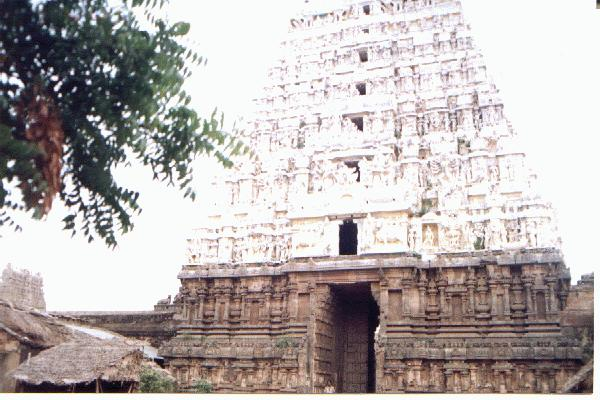
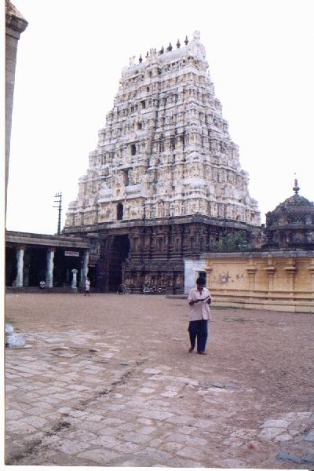
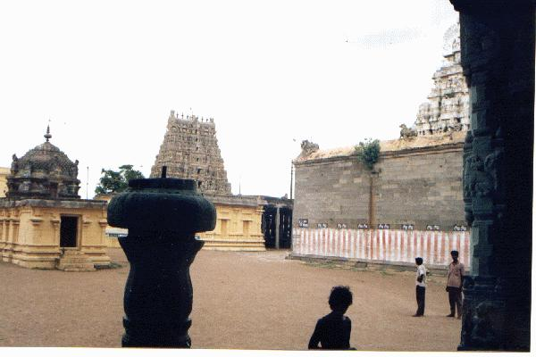
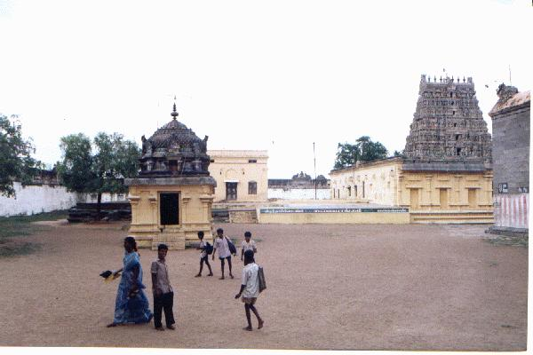
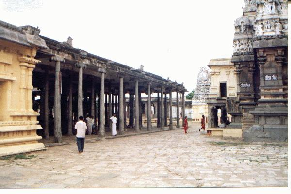
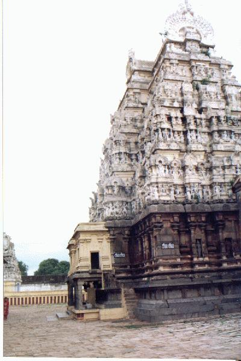
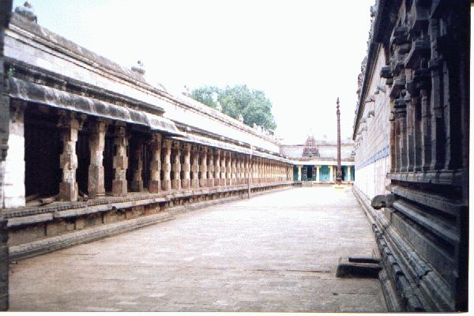

mutukuṉṟam
- Identifier: NA09
- Modern Name (NIC):
- Modern Name (M.I.): viruttācalam
- Modern Name (Govt Press): viruttācalam
- Modern Name: Viruttācalam
- Modern District & Taluk: kaṭalūr DT (viruttāccalam TK)
- Old administrative location: South-Arcot DT (Vriddhuchellam TK)
- Nearby town:
- Railway station: Viruttācalam (3 km)
- Longit. 79 deg. 19'; Latit. 11 deg. 31' [NA09]
- C.D.Maclean-3: entry: VRIDDHAUCHELLAM (2), p. 1018, col. 1,
[Vriddhuchellam is a sacred town
and many legends are connected with it,
lat. 11deg. 31', long. 79deg. 22']
- Location: according to PK: Naṭu Nāṭu (NA09)
- Name inside hymns:
- Name inside PK: mutukuṉṟam
- Rank inside third volume of PIFI: 238
- Rank inside Civastala Mañcari: 237
- Rank on PY576 map: 71
- Total number of patikam-s: 11
- Campantar: 7 patikam
- Appar: 1 patikam
- Cuntarar: 3 patikam
12 pictures taken on 1998 August 4th (Tuesday, 4 p.m.)












- Patikam 1_12
- Patikam 1_53
- Patikam 1_93
- Patikam 1_131
- Patikam 2_64
- Patikam 3_34
- Patikam 3_99
- Patikam 6_68
- Patikam 7_25
- Patikam 7_43
- Patikam 7_63